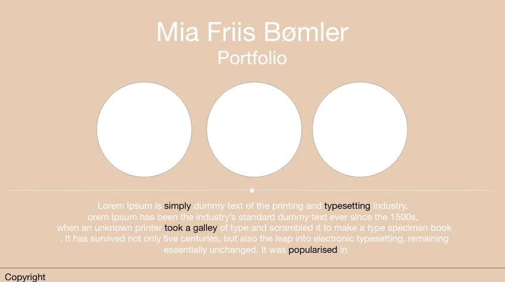

Opgavebeskrivelse:
Opgaven i flow 5 bestod i at vi skulle lave et komplet redesign af vores portfolioer og opdatere alle tidligere projekter, samt dokumentere udviklingen. Nedenunder kan du se udviklingsprocessen af min portfolio.
Projektstyring
WBS og PBS
Mit flow 5 projeket startede jeg med at lave projektstyring, så jeg havde et overblik over opgavens omfang, og tidsforbrug. Jeg fik lavet en PBS (Product breakdown structure) som indeholder dele som det færdige produkt skal bestå af. Dertil lavede jeg en WBS (Work Breakdown Structure) som er et skema over alle de opgaver som skal ordnes, for at få det færdige produkt. Det er vigtigt at have et overblik over alle opgaver.


Gantt-kort
Jeg startede min opgave med at lave et Gantt-kort, da det gav mig et overblik over
de opgaver og projekter jeg skulle igennem for at få det færdige projekt.
Klik nedeunder for at udforske:

Wireframe
Jeg startede med at skitsere min portfolio med papir og blyant, for at få en ide over
hvordan jeg tænkte den skulle se ud.
Derfra lavede jeg en wirframe i Adobe XD, som i kan se nedeunder:

Sitemape
Ud fra min wireframe, valgte jeg at lave et sitmap. Det gav mig et overblik over de sider som skulle være med i min portfolio.

Typeografi

Jeg har valgt at bruge skrifttypen Grandstander til mine overskfiter og Helvetica som brødtekst.
I mit flow 2 projekt, brugte jeg Grandstander på alle mine sider, efter min fremlæggelse modtog jeg feedback omkring det ville være en god ide
at ændre det, så overskrifter og brødtekst ikke havde samme skrifttype.
Derfor har jeg valgt i flow 5 at bruge Helvetica som brødtekst, fordi det er en simpel sans-serif.
Helvetica er installeret 100% på Mac computere, alternativt vil man se skrifttypen arial. Sans-serif skrifttyper er gode
til web sider fordi de er lettere at læse på en skærm.
Grandstander er display skrifttype, som jeg valgte i flow 2, da jeg
synes den passede godt ind i min portfolio.
Farver

I mit flow 2 projekt valgte jeg at min portfolio skulle være blå. Blå er en populær farve, den giver følelsen af fred, ro, harmoni, tillid og selvtillid.
Jeg ser blå som en professionel farve. Men i mit flow 5 eksame projekt, har jeg valgt at ændre den til beige.
Noget af det feedback jeg fik for min fremmlæggelse var om farven passede til min portfolio.
I mit flow 5 har jeg valgt at skifte farven til brune og naturlige jordfarver. De skaber følelsen af hygge, afslapning og fritid.
Naturlige jordfarver skaber en rolig atmosfære.
Github
Link til min Gitbub
Video
I vores opgavebeskrivelse blev vi sat til at udarbejde en videosekvens, som kan indgå i portfolioen som en del af præsentationen. Jeg starede med at skitsere på papir, hvad jeg tænkte kunne passe ind og som var vigtigt for mig at have med. Det var vigtigt for mig at filme fra nogle forskellige vikler, og resultat kan ses herunder:
Bruger test
Jeg valgte at lave tre bruger teste, hvor brugerne fik mulighed for at klikke rundt på min portfolio.
Det gav mig muligheden for at få andres øjne og mening, så jeg kunne få et bedre resultat.
Forbedringer efter brugertest:
Begge mine brugertest viste at det forstyrede øjene og ødelagde det rolige fra baggrundsfarven. Derfor ændre jeg det til kun at være hvidt
Efter testen valgte jeg at sætte et header med overskrift, over hvad man kan finde på siden, og alle projekters navn og hvilken flow det er.
Jeg valgte derefter at sætte "_blank target" ind på links og projekter så det åbener i et nyt vindue.
Refleksion
Hvilken kompetencer har jeg lært i flow 4?
Jeg har lært at styre et projekt helt selv, og bruge mange af de værktøjer og modeller vi har lært i praksis.
Jeg har skulle holde tungen lige i munden, for at holde styr på fejfinding i koder.
Det har været et stort projekt at kaste sig ud i, så har haft brug for at holde et godt overblik over projektet.
Brugte programmer til opgaven:
Hvad har jeg mere brug for at lære?
Min største udfordringer i dette flow, har været at få placering af billeder og videoer til at passe.
Jeg har i første omgang ikke lavet min side responsiv, da jeg måtte prioritere. Det er designet på 13" skærm.
Det er selvfølgelig min plan at det skal være responsivt, så mine container ikke rykker rundt.
Jeg har også haft nogle udfordringer med hover effekt, som jeg gerne ville have på forsiden og projekt siderne.
Jeg synes det giver en effekt, som passer til i min portfolio, men jeg havde ikke prøvet det før.
Min kontaktformular er ikke-virkende endnu, da vi endnu ikke har lært PHP.
Hvad vil jeg foretage mig for at komme til at lære dette?
Jeg skal have noget mere øvelse i hvordan jeg kan strukturere opgaven bedre fra start, som jeg håber vi lære i næste semester.Jeg har brugt w3schools til at lære hover effekt og lave en kontaktformular.